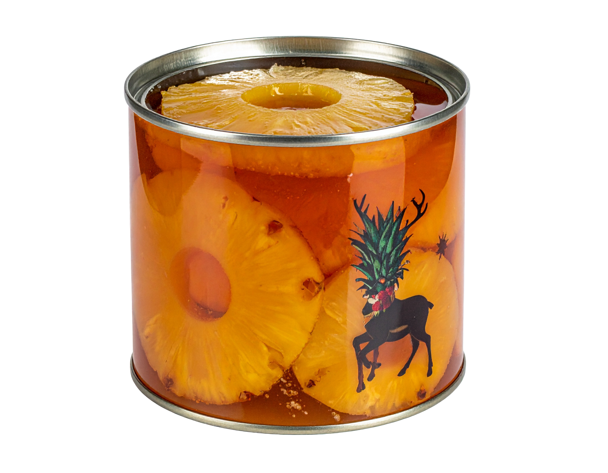

Ho ho ho ho!!
Nochebuena
Ternera a la piña, Suflé de piña y Sorbete a la piña

Reyes
Lubina con piña, Tarta de queso y polvorón de piña


La Navidad es una época que evoca aromas, colores y sabores únicos,
y entre ellos la piña se ha convertido en un símbolo inesperado pero encantador.
Su forma exótica y su dulzura tropical contrastan con el frío invernal, aportando frescura a las mesas festivas.
En muchos hogares,
la piña se utiliza para decorar centros de mesa o como ingrediente en platos navideños,
recordándonos que la celebración también es diversidad y mezcla de culturas.
Así, esta fruta dorada se convierte en un toque alegre que ilumina la tradición con un guiño a lo inesperado.